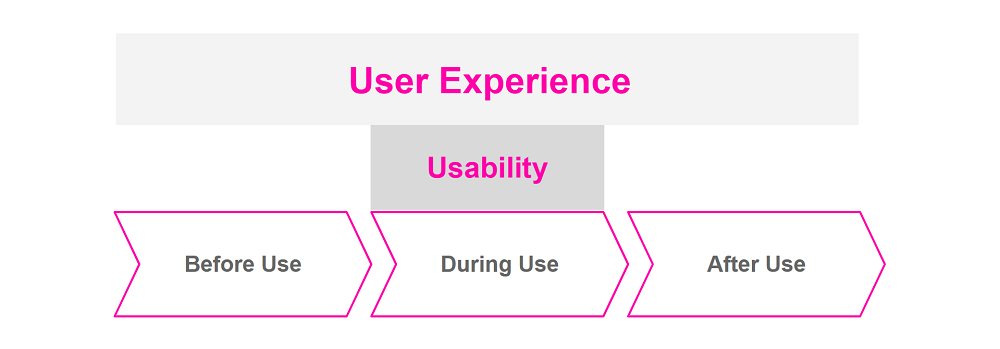

- explain the two terms
- describe their difference
- explain why Usability and UX are so important
Usability and UX
What is Usability?
As for many technical terms, you will find an official (and somewhat unwieldy) definition for Usability and UX. In the case of Usability, there is the the DIN EN ISO 9241-11 standard, which describes Usability as follows:'Extent to which a product can be used by specified users to achieve specified goals with effectiveness, efficiency and satisfaction in a specified context of use.'
What does that mean now? In my opinion, 'user-friendliness' is a pretty good description.
Usability and UX occur mainly in the context of digital products such as websites, apps and other applications. However, they are also relevant to physical products or services. Actually, they are relevant for everything where there is interaction between a person and a product or service.
Usability with my blog as an example
Let's take my blog as an example. While you are on my website, you interact with it. You click on blog posts or links to other pages, navigate back to the home page, etc.The first and most important question I have to ask myself is: who is actually 'you'? The DIN refers to a 'specified user in a specified context of use'. So I need to know for whom I design my website and under which conditions you visit it.
For example: Since it is a blog that you not only read at home on your laptop, but also spontaneously in the park or a coffee shop, I have to make sure that it also works well on your smartphone.
'Works well' brings us directly to the second part of the definition. You, as my user, should be able to achieve 'specified goals with effectiveness, efficiency and satisfaction'.
So I should make sure that you can easily find what you are looking for on my site - no matter if you use your laptop or your smartphone. You should always know where you are and how to get back without any problems. This includes, for example, that you can access the navigation menu from any page.
You should also find the information you expect in the places where you expect it. And this information should be legible. For example, the fonts on your phone should not be too small. So in the end, I need a well thought-out concept that suits you. And this concept needs to be implemented in a design that is as consistent as possible.
If you notice anything on my site that doesn't work or that makes you stumble again and again, please let me know! Then I either made a mistake in the code or I just messed up the Usability ;)
Good Usability mostly doesn't stand out
All in all, the aim is to enable the user to reach their destination as intuitively and easily as possible. With good Usability, the user doesn't have to make a special effort to successfully operate the product. And thus good Usability is usually not even noticeable. Only when you get annoyed because you suddenly don't know how to get back to the start page for example, the (bad) Usability comes to light.What is User Experience (UX)?
Equivalent to Usability there is also an official definition for UX. According to DIN EN ISO 9241-210, UX comprises'A person's perceptions and responses that result from the use and/or anticipated use of a product, system or service.'
UX therefore does not only refer to the actual process of use of a product or service. UX includes all expectations and emotions that a user experiences before, during and after use in connection with this product or service.
The goal of a good UX is to provide the users with an experience that meets their needs or even awakens new ones in them. And again, it is important to know who is actually using the product. Because different people will have different, subjective expectations and perceptions. What is a good UX for one person does not necessarily work for another.
UX with my blog as an example
With my blog, for example, I would like to address especially girls and women who are curious about tech topics, but are rather deterred by the classic, edgy, black-greyish yellow tech blog designs.So my target group is quite similar to myself. And that's why I designed the blog the way I like it myself. So far I have received positive feedback from my female readers. But when I recently showed the blog to a male friend, the feedback was 'looks really ugly'. Not very charming, but also less relevant than the feedback from my target group.
Of course, it's not just about design. Although the visual appearance plays a major role - especially on websites and apps - there are other aspects that influence the user's experience.
As mentioned before, the UX already plays a role before you even use a product. For example, if you are looking forward to visit my blog again, I have managed the last few times to give you a good UX. That may be because you expect to learn something great again. It can also be because you are looking forward to getting a new boost of motivation. Or you are looking forward to my blog, because you see in me a friend who tells you about her latest discoveries while having a nice cup of coffee. :)
In the next step I have to manage to meet your expectations and give you a nice experience again. My goal is that you feel comfortable on my side. I want to meet your expectations by writing understandable blog posts that offer you added value and the motivation you want. And of course a good Usability also plays an important role here (more on this in a moment).
If you feel enriched and inspired after the visit, maybe even tell your friends about it and come back yourself, I have definitely succeeded in making a good UX. Because then you will have had a good experience before the visit, during the visit and after visiting my blog.
What's the difference Usability and UX?
In summary, Usability refers to the actual process of use of a product or service. The goal of good Usability is that you can find your way intuitively and easily and find what you are looking for without noticeable effort.UX already takes place before use, during use and after use. The aim is to provide you with a positive experience that will evoke positive emotions in you. Optimally, you are looking forward to using the product, feel good during use and are so satisfied afterwards that you will use the product again.

Although Usability and UX are different things, they are still related. If a product is poorly usable, you will probably feel annoyed or incapable of using it. This usually does not release positive emotions or positive expectations for the next use. And that is why the UX is not good as well. For this reason, Usability is often referred to as the 'hygiene factor'. In other words, a good Usability should always be given as a prerequisite if you want to create a good UX.
On the other hand, good Usability does not mean good UX. For example, imagine a cheap old coffee machine that is super easy and flawless to use. But the average coffee is more a means to an end than a pleasure. You also don't like the look of the machine. So you won't be enjoying the machine nor the coffee. For this reason you can hardly speak of a good UX.
Why are Usability and UX so important?
If you google for it, you will find all sorts of reasons why Usability and UX are important. Service providers who offer their Usability/UX expertise list benefits such as 'higher customer satisfaction', 'lower bounce rate', 'more new customers', etc. In the end, all these reasons can be summarized into one reason:- People are reluctant to use products with poor Usability because they trigger negative emotions. A prerequisite for people to (voluntarily) use and reuse products is a good Usability.
- How important a good UX is for a product and what 'good UX' means for this product depends on the expectations and needs of the user. However, if the UX is important, the user will only use and recommend the product again if it is also good.
This means that good Usability and UX are relevant for the success of products and services. And no matter whether you want to sell a product or share information, for example, via a website: without users there is no reward. The product generates no profit and the website no confirming feedback.
If you imagine a software that is used, for example, to support business processes, there are other important reasons for a good Usability. If users do not find their way around the software, they work less productively. Furthermore, the risk of making mistakes increases if the system is not intuitive enough and prevents errors. And that costs money.
Don't blame the user
So if someone ever tells you that you have to educate users because they can't handle the product properly, it's best to question that first. Because as a rule, if the user feels helpless, lost or a little incapable when interacting with a product, this is - in most cases :) - not the user's fault, but the poor usability.By the way, there are jobs that deal exclusively with Usability and UX. So if you feel that you could get enthusiastic about the topic, this could also be a way into the tech industry. As a UX designer, for example, you will work in software teams, help design product concepts, analyze user behavior, etc. Modern software companies know how important Usability and UX are and how sensible and (cost-saving in development) it is to put value on them from the very beginning.
The next time you get annoyed about a confusing website, you now know that probably no Usability expert was involved.
I hope you liked this post!
See you soon!
Caro
Leave a comment
Feel free to leave me a comment. Your e-mail address will not be published. The fields marked with a * have to be filled out to send the comment. It may take a few hours until your comment is published.